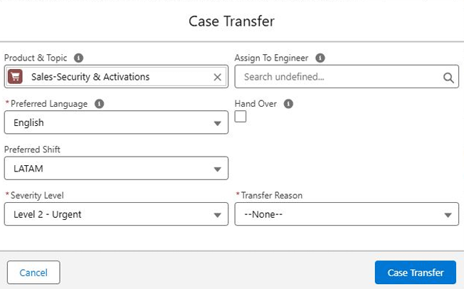
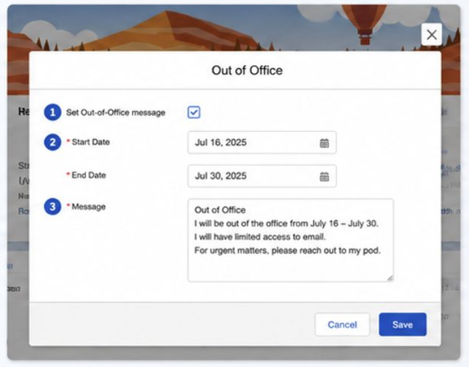
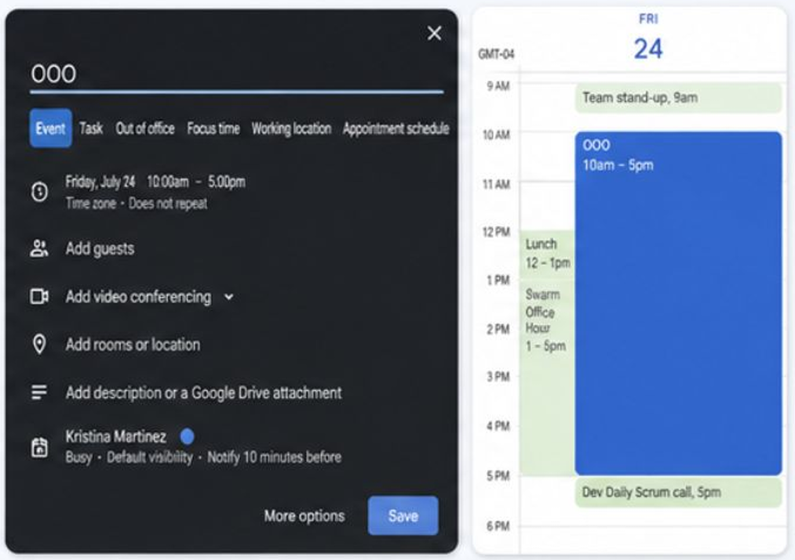

Sales Cloud
Drives revenue by managing the sales pipeline and finding new customers.
Learn the platform through a consistent path: Learn → Understand → Investigate → Apply → Check.
The foundation of the Salesforce platform and the concepts used throughout the training.
Hover over each product to learn what it does. Sales and Service can also take you directly to their training sections.
Production, Sandbox and the administration tools used to configure Salesforce.
The main live Salesforce org where real business operations run.
A copy of the Production org used for development, testing, training and experimentation.
Objects, fields and configuration concepts that define how a Salesforce org is structured.
Placeholder for custom fields, record types, picklists and related concepts.
Two core areas covered in the training program.
Drives revenue by managing the sales pipeline and finding new customers.
Drives retention by resolving customer issues and optimizing support.
A section we can expand into an interactive troubleshooting playbook.
Capture the relevant findings and context.
Document how the issue can be reproduced.
Collect information that supports the investigation.
Clearly state the next action based on the investigation.
This is your training home. Open any module to enter its learning hub, continue where you left off, and track completed topics.
Topics across Modules 01–09. Module 10 · Real Case Library will be added later and is not counted yet.
Each topic is written as a primary learning resource: first learn the concept, then understand it, investigate it, apply it, and check your understanding.
9 topics · Structure ready
7 topics · Structure ready
10 topics · Structure ready
10 topics · Structure ready
18 topics · Structure ready
9 topics · Structure ready
12 topics · Structure ready
18 topics · Structure ready
12 topics · Structure ready
Coming later · excluded from course progress until the case library is built.
Search common terms and abbreviations used throughout the training.
Administrative console used to support customers and troubleshoot org issues.
Point of Delivery: a logical grouping of Salesforce infrastructure serving customer orgs.
Salesforce Object Query Language, used to query Salesforce data.
User Acceptance Testing.
A Salesforce record used to track a potential sale or deal as it moves through the sales process.
Service Level Agreement: a support commitment that defines response timing or other service expectations.
Service Level Objective: an internal or operational target used to measure whether service is performing as expected.
An AI-assisted Salesforce experience that can help draft communication, summarize information, and support case documentation. Its output should be reviewed, edited, and confirmed before use.
Root Cause Analysis: a structured approach for documenting the underlying cause of an issue, the resolution, and the information needed to make the troubleshooting history reusable.
Global Handover Template: the internal handover format used to capture the receiving skill group, issue, reproduction steps, and troubleshooting performed before a case moves between teams.
Case categorization fields that identify the relevant product area and issue topic. Accurate values help route the case correctly and give the receiving team useful context.
Salesforce routing capability that evaluates incoming work and delivers it to an appropriate available agent using configured routing criteria.
A holding place for cases or other work before it is assigned or routed to an eligible agent or owner.
An agent availability state used by Omni-Channel to understand whether the agent can receive new work.
A routing model that considers required agent skills in addition to factors such as availability and capacity.
Customer Satisfaction: a measure of how satisfied customers are with the support they received, commonly captured through surveys.
Time to Resolution: the average time required to completely resolve a case.
The planning framework used in the training to connect methods, measures, and team priorities.
The workforce-management tool referenced in training for schedule, availability, and coverage processes.
The Salesforce concept that connects products and customer data across the platform so business functions can work from a broader customer view.
An architecture model where multiple customers share underlying infrastructure while each customer org and its data remain isolated.
An isolated Salesforce environment used for development, testing, training, and safe experimentation without affecting live Production users.
The structural layer of a Salesforce org — objects, fields, layouts, rules, flows, and other configuration that define how the org behaves.
The primary Salesforce license assigned to a user. It establishes that user's baseline platform capabilities.
An additional license that enables a specific feature or capability for an eligible user.
A license layer that extends the capabilities available to a user beyond the baseline user license.
The nine-dot “waffle” used to switch between Salesforce apps and find available items.
A visual tool for viewing object relationships and creating custom objects or fields.
A configuration that lets one object support different business processes, picklist values, and page-layout experiences.
A configuration that controls which fields, related lists, buttons, and actions are arranged on a record page for a given assignment.
Lightning capabilities that conditionally show or hide fields and actions based on criteria such as record data or user context.
Salesforce internal org-provisioning platform used to spin up preconfigured Salesforce orgs for development and testing use cases.
A Salesforce-provisioned demo or test org used by support engineers to reproduce customer issues.
No glossary terms found.
References are grouped by the training topic they support so you can move from the guide to the source material without losing context.
Internal Knowledge references for severity classification and the case follow-up / closure process.
Use this reference when validating severity expectations and the support handling model associated with the case.
Open internal Knowledge article ↗Use this reference for the operational follow-up and closure path that connects to severity and SLA management.
Open internal Knowledge article ↗Internal references for scope validation, ownership decisions, handovers, and partner transfers.
Use when validating whether a request belongs to the current support team before moving ownership.
Open internal Knowledge article ↗Use when deciding whether the request is a supported Sales or Service how-to case or requires another ownership path.
Open internal Knowledge article ↗Use when the issue may belong to Developer Support and the transfer boundary needs to be validated.
Open internal Knowledge article ↗Use when preparing the investigation context that must travel with an internal handover.
Open internal Knowledge article ↗Use when the ownership path involves a partner case or a transfer between the relevant support organizations.
Open internal Knowledge article ↗Internal resource connected to customer communication and Art of Service.
Internal operational references for queue prioritization, work management, and routing behavior.
Use this internal Quip alongside the topic when reviewing day-to-day queue handling and prioritization guidance.
Open internal Quip ↗Use this Knowledge article as an operational companion for the queue, Omni-Channel, or routing concepts covered in 01.7.
Open internal Knowledge article ↗Broader resources used across multiple modules.
Learning resource placeholder.
Current source material placeholder.
Documentation reference placeholder.
Start with the role: how cases move, how impact and SLA shape the work, and how an engineer communicates, documents, transfers and closes customer issues.
A Success Engineer combines technical investigation, clear customer communication, and product expertise to help customers move from a reported issue to a useful outcome.
The role brings together technical investigationReviewing the issue, evidence, environment, and relevant technical context to understand what is happening., customer communication, and product knowledge. Solving the technical problem matters, but so does helping the customer understand what is happening and what comes next.
Support work is connected to customer outcomes and service excellence.
Strong product knowledge makes investigation and guidance more effective.
Product proficiency, certifications, AI readiness, and continued learning are part of the role.
A Success Engineer works at the intersection of the customer problem, the product, and the technical evidence needed to move the investigation forward.
Understand the reported behavior and gather the evidence needed to investigate it.
Understand what the customer is trying to accomplish and communicate progress clearly.
Use product knowledge to validate behavior and determine the most useful next action.
Your role is not only to find a technical explanation. You also need to understand the customer impact, investigate with evidence, use the right product knowledge, and keep the customer informed about the next step.
A support case moves through a repeatable journey from creation to closure. Each stage should preserve enough context for the investigation to continue without unnecessary rework.
The customer opens a support case and it enters the support workflow.
The case record becomes the central place for the investigation, communication, and history that follow.
Keep the reported problem, affected behavior, and relevant customer context clear.
Record what was reviewed, reproduced, learned, or ruled out during the investigation.
Document enough detail so a transfer, escalation, or follow-up can continue without restarting from zero.
Be clear about where the case is in the lifecycle and what has already happened.
Carry forward the useful investigation details instead of making the next step start from zero.
Make the next owner or customer action clear so the case can continue moving.
Clear communication, thorough investigation, and useful documentation keep the case moving toward resolution while preserving continuity.
The next move is not to transfer it immediately or change configuration. Start with the initial investigation: review the case and evidence, gather context, and ask the questions needed to understand the behavior.
Severity defines urgency, business impact explains why the case matters, and SLAService Level Agreement: a support commitment that defines response timing or service expectations. Click to open the glossary. / SLOService Level Objective: an operational target or milestone used to measure support performance. Click to open the glossary. commitments shape the timing of customer communication and follow-up. The right classification comes from the real customer impact, not only from the wording in the case.
A case becomes more urgent when the customer experiences stronger business disruption, tighter timing requirements, or broader operational risk. The severity label should reflect that real impact and guide the response model that follows, including the expected SLAService Level Agreement: the support timing commitment attached to the case. Click to open the glossary. behavior and internal SLOService Level Objective: the target used to track whether support is operating on time. Click to open the glossary. milestones.
The urgency level of the case and the speed of response it requires.
What is blocked, who is affected, how broad the issue is, and whether core work has stopped.
Timing commitments such as initial response and follow-up that must be monitored and met.
Before accepting a severity at face value, confirm the actual business disruption, customer urgency, scope, and support expectation.
Highest-priority customer situations with major business impact that require immediate coordination and strict milestone attention.
Serious impact, but not the most critical state. Response urgency is still high and milestones matter closely.
Important issue with manageable short-term risk. The customer needs progress, but the case is not an emergency.
Low-impact questions or issues with limited urgency. Support still follows through, but the timing expectation is lighter.
What business process is affected? Is the customer blocked, degraded, or asking a general how-to question?
Is it one user, one record type, one environment, or a broader outage affecting multiple users or functions?
Use customer communication to align on the real response timeline. If urgency is lower than stated, reclassify it clearly.
If the customer confirms they can wait longer, it can be appropriate to lower the severity and manage the case against the more accurate expectation.
Do not rely only on the initial label. First confirm whether all users are blocked or whether the issue is limited. Ask what response timing the customer needs. If the impact is narrower and the customer agrees a next-day follow-up is acceptable, you can reclassify the case and continue with the more accurate severity.
Review the internal Knowledge articles connected to severity classification and case follow-up / closure.
A high-quality case should make the issue understandable, the investigation traceable, and the next action obvious. Good documentation protects continuity so another engineer can continue without rebuilding the investigation from zero.
The case should preserve what happened, what was checked, what evidence was found, and what comes next. A useful record lets the next engineer understand the investigation without reconstructing it from email history.
Accurate categorization improves routing and gives the receiving team immediate context.
Consolidate the important case information into one usable overview instead of forcing a reader through the entire thread.
Use AI assistance as a draft or summary aid, never as a substitute for technical review.
A form can be complete and still be unhelpful. The goal is to capture enough detail to reproduce the behavior, understand what has already been tested, and continue with the next logical action.
Describe the actual behavior, expected behavior, affected users, environment, and any precise error or identifier.
Record repeatable steps, the user or context used, and the conditions needed to see the problem.
Capture troubleshooting performed, evidence collected, comparisons made, and paths already eliminated.
State the next investigation step, customer dependency, handoff need, or resolution action clearly.
The subject and description identify the real problem rather than repeating the same vague sentence.
You know which users, environments, or records are affected.
The steps are precise enough for another engineer to try the behavior consistently.
Logs, error IDs, queries, screenshots, or other relevant findings are connected to the reasoning.
This tells the next engineer almost nothing about the actual behavior, scope, reproduction path, or troubleshooting history.
Describe the behavior, record the exact reproduction path, capture what was tested, and show why the next step makes sense.
No affected-user context, no exact error, no reproduction steps, and no record of what has already been checked.
Capture the affected user, exact action, exact error or ID, environment, reproduction steps, evidence reviewed, troubleshooting already performed, and the next action.
Closing a case means leaving a reliable record of the outcome and following the correct process for the situation. Unresponsive customers, duplicate cases, out-of-scope requests, and root-cause documentation require different closure decisions.
A useful closure leaves enough context to understand what happened, how the case ended, and which process justified the final action.
Document what solved the issue and why the resolution is complete.
Use the defined no-response process and preserve the follow-up history.
Preserve the original case and close the duplicate with a clear comment.
Validate the boundary and record the guidance provided to the customer.
No-response handling depends on the stage of the case. The general unresponsive-customer path uses a 10-day response window, while a case already in Solution Provided can automatically close after 5 business days without a customer reply.
When the investigation is complete and you choose Close Case, the closure process asks the engineer to classify why the issue occurred and document the result. These are fields on the support case — they are not separate cases.
Sub-Cause is not “Sub Case.” It is a more specific classification underneath Case Cause. Its available values depend on the Case Cause selected first.
The primary category that best describes why the issue occurred.
A more detailed classification under Case Cause. It behaves as a dependent picklist, so the options shown depend on the selected Case Cause.
The written summary of what the investigation discovered: the underlying cause, the resolution, and the reasoning that supports the conclusion.
A closure field that the training instructs the engineer to verify before closing the case. Confirm that the Product Feature associated with the case is correct before finalizing closure.
Keep the case history clear and follow the correct post-solution no-response process. If the workflow reaches the automatic-closure condition after 5 business days without a response, the case can close without treating it as an unresolved investigation.
A transfer should continue the investigation, not restart it. Before moving a case, validate scope, choose the correct destination, and carry enough context for the receiving team to understand the issue and the work already performed.
Do not move a case to another team or a higher level with no context. Confirm scope, perform the initial research, and make the handoff useful enough that the next team can continue immediately.
Use these case categorization fields to identify the relevant product area and issue topic. Accurate values support routing and give the receiving team immediate product context.
Use the relevant Knowledge guidance after initial research to determine whether the request belongs to the current team.
Explain the issue, reproduction steps, troubleshooting performed, and why the case is moving.
The transfer form brings together the categorization and routing context used during a handoff, including Product & Topic, language, shift, severity, transfer reason, and the handover option.

Understand the issue before deciding whether it belongs somewhere else.
Use the relevant support Knowledge article or guidebook to confirm team responsibility.
Choose the appropriate skill group, internal team, or partner path.
Transfer the investigation history, not only the case record.
The receiving team should be able to understand where the case is now, why it is moving, and what work has already happened.
Document where the case currently lives.
Identify the receiving destination clearly.
Briefly describe the problem and include the relevant error message.
List the steps if they are not already populated. If unknown, make the pending reproduction action explicit.
Record the investigation already completed, including relevant debug, network, or Splunk analysis.
Inform the receiving team why ownership is moving and what the expected next action is.
Validate the scope, document Product & Topic, preserve the issue and troubleshooting history, and explain why the receiving team is the correct owner.
Do not pretend the investigation belongs to the Salesforce team. Redirect appropriately and, when useful, provide the customer information about where partner support can be found.
Research first. An escalation without context forces the next level to repeat basic discovery and breaks the continuity the handoff is supposed to protect.
Review the internal references for case handling, scope boundaries, GHO handovers, and partner transfers.
Support work is not handled in the order it happens to appear. Queues organize incoming work, Omni-ChannelOmni-Channel evaluates incoming work and routes it to an appropriate available agent. Click to open the glossary. distributes it, and engineers continuously balance availability, capacity, skills, priority, and SLAService Level Agreement: the support timing commitment attached to a case. Click to open the glossary. risk.
Routing exists to reduce manual assignment, balance workload, and help customer work reach an engineer who is actually able to take it.
Organizes work before it is assigned to the right eligible agent or owner.
Evaluates routing criteria and distributes work automatically.
Communicates whether an agent is available, busy, away, at lunch, or offline.
Is the agent currently able to receive new work?
How much active work can the agent realistically handle?
Does the agent match the expertise required for the work item?
How urgently should this work be handled relative to other work?
Combines the configured routing criteria and delivers the work to the best eligible available agent.
After Omni-Channel and skills-based routing are enabled, administrators can configure skills and route work only to agents who meet the required combination.
The operational rule from training is simple: answer the cases with the greater SLA risk first. Severity, approaching milestones, aging, customer follow-ups, and new lower-risk work help shape that decision.
Handle the most urgent customer impact first.
Protect cases approaching a response or follow-up commitment.
Prevent work from sitting without meaningful progress.
Keep commitments and previously promised next steps moving.
Pick up new work while higher-risk obligations remain protected.
Review the routing configuration and determine why the work was directed to the current queue.
Check agent availability, capacity, routing requirements, and skill eligibility.
Confirm the configured business priority and whether another eligible agent was actually available.
Sarah is Available. Mike is Busy and already handling high-priority work. Jessica is at Lunch. Omni-Channel should not assign randomly: it evaluates who is eligible and available, then routes the new work to Sarah.
Open the References area for the internal Quip and Knowledge resources associated with queue handling and work routing.
Strong support is more than finding the technical answer. The customer should understand what is happening, what has been learned, who owns the next action, and when they can expect the next update.
A useful customer experience combines technical progress with professional, empathetic communication. Customers should never need to guess whether the case is moving or what happens next.
Be clear, professional, empathetic, and customer-centered.
Keep updates concise and actionable while documenting findings and next steps.
Communicate timelines, ownership, dependencies, and changes before the customer has to ask.
Use empathy, professionalism, de-escalation, and solution-oriented language.
Focus on business impact, risk, status, and mitigation rather than unnecessary technical detail.
State the investigation action or research completed.
Share the useful result, evidence, or current understanding.
Set the next action, owner, and expected timing.
An update can still be valuable before the root cause is known. Tell the customer what is being explored and when they should hear from you again.
Customers commonly escalate when they feel the case is not progressing. Strong communication reduces that uncertainty and helps internal teams coordinate earlier when risk increases.
Separate frustration about the experience from the technical symptom itself.
Do not tell the customer their issue is unimportant. Clarify the impact and respond professionally.
If a request is out of scope or a limitation applies, support the explanation with the appropriate documentation.
If dissatisfaction or business risk is increasing, align with the appropriate internal stakeholders instead of letting the situation drift.
Use the Out of Office message in OrgCS so teammates and customers know when you are unavailable, how long you will be away, and what they should do for urgent needs.
Turn on the Out of Office message so your availability status is clearly communicated.
Choose the start and end dates that define the exact period when you will be unavailable.
Write a short message that explains you are out, mentions limited email access if relevant, and tells urgent contacts where to go.
Save the configuration so the message becomes active in OrgCS during the selected time window.

After setting the OrgCS message, reserve the same time in Google Calendar so teammates can quickly see your availability and plan around it.
Click Create (+) in Google Calendar and open a new event.
Give the event a clear title such as OOO or Out of Office.
Enter the start date, end date, and time range that match your unavailability.
Include a short note about your availability and return date when it is useful for internal visibility.
Save the event so your OOO block appears on your calendar and others can see the coverage window.

In addition to setting the OrgCS OOO message, notify customers that need coverage, reflect the time in Google Calendar, and update AssembledAssembled is the workforce-management tool referenced in the training for schedule and availability tracking. Click to open the glossary. so workforce visibility stays aligned.
Open the References area for the internal Slack document associated with Customer Experience and Art of Service.
Support performance is measured through a combination of workload, customer experience, resolution speed, service commitments, escalation behavior, workforce adherence, knowledge contribution, and continued role development.
Each measure answers a different operational question: how much work is moving, how customers feel, how long resolution takes, whether commitments are being met, and how often work requires another support layer.
Amount of work completed through cases solved, tasks completed, workload handled, and throughput.
Customer satisfaction with the support received, commonly measured through survey scores.
Average time required to completely resolve a case.
Measures whether target response and resolution commitments are being met.
Percentage of cases requiring another team, engineering, or a higher support tier.
The training presents these measures as complementary signals. Operational quality includes both the work completed and the experience created while completing it.
The Day 1 training connects support expectations to career development, reactive support motions, collaboration, and accelerated onboarding.
Build product expertise, AI readiness, role proficiency, and career growth.
Improve support effectiveness through Agentforce, synchronous channels, workforce adherence, and knowledge efforts.
Represent the voice of customers and collaborate to improve product serviceability.
Build foundational knowledge, certifications, and confidence to support customers independently.
Overall 4.50 · Premier 4.55 · Standard 4.45 · Signature 4.70
6 days
> 85%
2 Knowledge Articles per quarter · 1 release-readiness video/content item per release
These values are a period-specific FY27 snapshot from the training material. Verify current team targets before using them operationally.
The training goal is not instant mastery. It is to become productive through product foundations, certifications, investigation habits, and progressively independent case ownership.
Learn the products, support processes, investigation tools, and communication model.
Complete the first required role certifications and maintain role proficiency.
Manage customer support cases while applying the investigation and communication habits from training.
Deepen product expertise, AI readiness, knowledge contribution, and cross-team collaboration.
25 questions covering the complete module: role fundamentals, case lifecycle, severity, documentation, closure, transfers, queue management, customer experience, and success metrics.
Build the platform foundation first: Customer 360, architecture, environments, licensing, data model, navigation and configuration.
Salesforce is a platform of connected applications and services. Customer 360Customer 360 connects Salesforce products and customer context across business functions. Click to open the glossary. is the mental model that helps you see those products as one ecosystem instead of isolated tools.
Sales, Service, Experience, Commerce and other products can participate in the same customer lifecycle. The final implementation varies by company, industry, and business process.
Salesforce provides the underlying platform services.
Core and specialized products support different business functions.
Related data creates continuity across the journey.
Organizations extend the platform with their own apps and processes.
Which cloud or product experience is the customer working in when the behavior occurs?
Which accounts, contacts, cases, opportunities, or other records connect the workflow?
Determine whether the issue belongs to one product configuration or to the interaction between products and shared data.
Customer 360 is useful because customer problems often cross product boundaries. Start by understanding the complete journey before narrowing to a component.
Do not begin by assuming Service Cloud is broken. Identify which record or relationship should carry the context, confirm where the data originates, and determine whether the issue is in the source data, the connection between records, or the consuming experience.
Architecture gives a Success Engineer the context to decide whether a behavior is customer-specific, org-specific, environment-specific, or part of a broader platform condition.
A single Salesforce software and infrastructure model serves multiple customers while each tenant remains logically isolated.
Customer data isolated
Customer data isolated
Customer data isolated
A logical infrastructure cluster serving a set of customer orgs. POD context helps support teams understand infrastructure scope and release context.
Administrative support console. The training distinguishes BT for Production and SBT for Sandbox context.
Public platform-health view for incidents, maintenance, and service transparency.
Provision preconfigured orgs for development and specialized testing use cases.
Demo/test orgs used by support engineers to reproduce customer behavior.
Confirm the exact org and environment where the behavior occurs.
Understand the infrastructure cluster serving the org.
Check Salesforce Trust for a broader incident or maintenance condition.
Use another environment or test org to determine whether the behavior reproduces elsewhere.
Capture the org and environment first. Check whether the behavior is isolated, review platform-health context, identify the POD when relevant, and compare against another org or environment before deciding that the issue is a broader platform defect.
Production runs the real business. SandboxesIsolated Salesforce environments used for development, testing, training, and safe experimentation. Click to open the glossary. give teams a safer place to build, reproduce, and validate behavior.
Real customers, real revenue, live automations, dashboards, and daily business operations.
An isolated copy or test environment used for development, testing, training, and experimentation.
Metadata-only and lightweight. Useful for individual development and testing.
Similar to Developer with more storage capacity.
Metadata plus a subset of production data for more realistic testing.
Complete metadata plus production data for the highest-fidelity copy described in the training.
Production, Developer, Developer Pro, Partial Copy, or Full?
If Production changes are missing in the sandbox, verify the last refresh timestamp.
Different data volume or stale configuration can explain inconsistent behavior.
Sandbox type, quantity, and refresh availability can depend on edition and licensing.
Do not make configuration changes in a customer's live Production org while investigating. Observe or reproduce the issue, then move testing to an appropriate sandbox or test org.
Before treating it as a platform defect, confirm the sandbox type and the last refresh. Then compare metadata and data differences between Production and the sandbox.
What a customer can use may depend on the Salesforce edition, the user's primary license, additional license layers, and organization-level entitlements.
Sets the broad product capability, limits, and sandbox entitlement available to the organization.
Baseline capabilities required for the user.
Adds a specific feature or tool.
Extends the user's available capabilities.
Before investigating deeply, verify whether the customer's edition and license combination actually includes the expected capability.
Feature availability and platform limits can vary by edition.
Available sandbox types, quantities, and refresh intervals can depend on edition/licensing.
Some organization capabilities are consumed or purchased based on usage rather than a user seat.
One user's capability may differ from another because of license assignments.
What feature is the customer trying to use?
Does the organization edition include the feature?
Does the affected user have the required license layers?
Only after access is valid should you assume a configuration issue.
Compare the users' primary licenses, feature licenses, and permission set licenses before treating the difference as a platform defect. Then review configuration and permissions if licensing is correct.
Successful troubleshooting starts by separating metadataThe structural blueprint of the org: objects, fields, layouts, rules, and other configuration. Click to open the glossary. from the data stored inside those structures.
Salesforce provides standard objects such as Account, Contact, Case, Lead, Opportunity, Product, Quote, Task, and User. Customers can create custom objects and fields for business-specific needs; their API names commonly use the __c suffix.
Inspect configuration: object, field, layout, record type, validation rule, automation, or visibility logic.
Inspect the specific record values, related records, imports, updates, and the process that populated the data.
First confirm whether the field itself exists and is part of the expected configuration. If the structure is correct, move to the record data and related process that should populate the value.
Fast investigation depends on knowing how to move through apps, records, search, and administrative entry points without losing the customer's path.
Configuration determines how Salesforce presents business processes to users. Setup, Object Manager, relationships, record types, layouts, picklists, and dynamic visibility are common starting points for investigation.
The administrative control center for platform-wide configuration.
Inspect and configure a specific standard or custom object: fields, relationships, layouts, and rules.
Visualize the data model when relationships are hard to understand from individual object pages.
The controlling field filters the values available in the dependent field.
Different teams can use the same object while receiving different business-process experiences.
Assignments combine user context and record type to determine the layout a user sees.
Visibility criteria reduce page clutter and surface only relevant fields and actions.
Start in Object Manager for the object where the issue occurs.
Confirm the field and its type.
Verify the user's record type and assigned page layout.
Check whether criteria hide the field or action.
Check the controlling/dependent field relationship and value mapping before treating the missing option as a defect.
Confirm the object, then compare the user's record type and page-layout assignment. If those are correct, check Dynamic Forms / Actions and remember that permissions can be another visibility layer covered later in the course.
25 questions covering Customer 360, architecture, environments, editions and licenses, data model, navigation, and configuration.
Follow the customer acquisition journey through Sales Cloud and Experience Cloud, then connect each feature to the support questions it can generate.
Understand the connected Service Cloud ecosystem where cases, routing, messaging, email, knowledge and agent productivity work together.
Learn the Salesforce access model from object and field permissions through record visibility, sharing and restrictions.
Understand what can happen during a Salesforce transaction and how Flow, validation and Apex influence behavior.
Learn how customers analyze Salesforce data and how report configuration, security and bulk data tools affect troubleshooting.
Build a practical toolbox for gathering evidence across the UI, logs, data, internal systems and AI-assisted investigation.
Turn individual tools into a repeatable investigation method: scope, impact, reproduction, research, evidence, RCA, escalation and collaboration.
This will be the final section of the training guide. We will build it later from the real-case material you provide.
When we build this section, each case can follow a consistent path such as Issue → Context → Scope → Investigation → Evidence → Tools → Root Cause → Resolution → Communication → Takeaways.